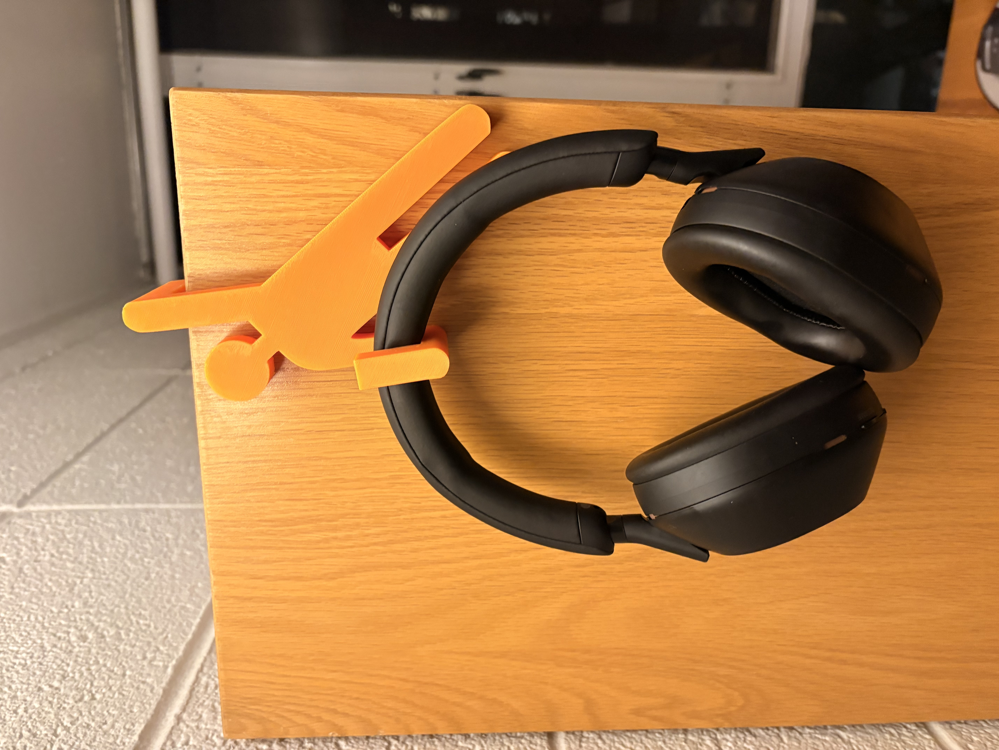

<div class="textcontainer">
<p class="margin"> </p>
<a id="btn" href="./wk4_ designfiles.zip" download> Files
</a>
<br>
<br>
<Br>
<h3>Week 5: 3D Design & Printing</h3>
<h4>Assignment: Model and 3D print something</h4>
<br>
<h6> Final Project Updates in Week 13</h6>
<h6> 3D PRINT: </h6>
<p>
This week I set out hoping to 3d print something that was practical and that I would actually use on a day to day basis. As of recently I've gotten into the
habit of hanging my headphones on the edge of my desk, and the constantly fall. Given this problem I set out to make a cool looking heapdhone holder that also looked like a person hanging
off a ledge while holding the headhphones.
</p>
<p>
In Prusa I flipped the print about 45 degrees to allow for the most support and print process given the faces on the arms.
The print ended up going very well, and I only had to add rubber stops on the inner surfaces to prevent sliding across the ledge. This helped a ton!
</p>
<br>
Design photos:
<br>
<p></p>
<br>
<img src="Screenshot 2026-03-04 at 9.46.34 PM.png" alt="placeholder for image" width=100% height= 50%>
<br>
<img src="Screenshot 2026-03-02 at 1.37.38 PM.png" alt="placeholder for image" width=100% height= 50%>
<br>
<br>
<br>
<br>
<h4> SCANNING
</h4>
<p>
For the scanning aspect of the assignment, I helped someone else scan their head and then we tried to scan my head. My head
had a ton of difficulty being scanned. We tried shifting the lighting and angles at which we were scanning. I hypothesized that the complexion of my skin made it a bit harder for the tracking of the camera
over the course. As expected my hair also had a ton of difficulty.
</p>
<img src="IMG_6663.jpeg" alt="placeholder for image" width=100% height= 50%>
</div>